- GPU가 장착된 로컬 PC 1대에 Ubuntu 24.04 → NVIDIA Driver → Docker/Container Toolkit(검증용) → K3s + NVIDIA device plugin → kube-prometheus-stack/DCGM Exporter 순서로 "로컬 PC → 컨테이너 → 쿠버네티스"의 각 계층에서 GPU가 실제로 어떻게 인식·주입되는지 직접 확인하는 실습입니다.
- NVIDIA GPU는 커널 드라이버(
nvidia.ko)와 유저스페이스 라이브러리(libcuda.so,libnvidia-ml.so)가 버전 강결합이라 컨테이너 런타임(NVIDIA Container Toolkit)이 매번 호스트 라이브러리를 컨테이너 안으로 주입해야 하며, 이 원리가 Docker든 K8s Device Plugin이든 동일하게 적용됩니다. - 마지막에 K3s 위에 MinIO+vLLM(S3 스트리밍 로더)으로 실제 LLM을 서빙하고, HAMi(GPU 공유)와 K8s DRA는 "도전과제" 형태로 링크만 제공되는 심화 주제입니다.
flowchart TB
subgraph HOST["로컬 PC (Ubuntu 24.04, GPU 장착)"]
DRV["NVIDIA Driver
(nvidia.ko, libcuda.so)"]
K3S["K3s (단일 노드 K8s)"]
RC["RuntimeClass: nvidia
(containerd가 감지, 항상 보장되지 않음)"]
DP["NVIDIA device plugin
(DaemonSet)"]
NFDGFD["NFD + GFD
(GPU 노드 라벨링)"]
MON["kube-prometheus-stack
+ DCGM Exporter"]
MINIO["MinIO
(모델 오브젝트 스토리지)"]
VLLM["vLLM Deployment
(S3 스트리밍 로더)"]
WEBUI["Open WebUI"]
K3S --> RC --> DP
DP --> NFDGFD
DRV --> RC
MON -.->|모니터링| DP
MINIO --> VLLM --> WEBUI
DP -.->|"nvidia.com/gpu 리소스"| VLLM
end
실습 소개
요약: '로컬 PC → 컨테이너 → 쿠버네티스' 단계별로 GPU 인식 및 실행을 확인하는 실습 가이드입니다.
- 로컬 PC에서 GPU 드라이버 로우레벨 내부구조(디바이스 노드, 커널 모듈, DKMS)부터,
- 컨테이너 레벨에서 Docker/NVIDIA Container Toolkit의 OCI 훅 메커니즘,
- 쿠버네티스 환경에서 K8s Device Plugin gRPC 프로토콜, CDI 스펙 파일 내부,
- 마지막으로 Prometheus/Grafana/DCGM 기반 GPU 모니터링·알림까지 확인합니다.
실습 순서: ① Ubuntu 24.04 Server 설치 → ② NVIDIA Driver 설치 → ③ Docker+Container Toolkit 설치(검증용) → ④ Docker 삭제 → K3s+device plugin 설치 → ⑤ 파드 기동 확인 → ⑥ kube-prometheus-stack+ DCGM Exporter → ⑦ NVIDIA GPU Operator(개념) → ⑧ vLLM 배포 → ⑨ HAMi(도전과제) → ⑩ K8s DRA(도전과제)
📚 참고: NVIDIA GPU Operator는 Driver·Container Toolkit·Device Plugin·DCGM Exporter·MIG Manager 등을 한 번에 관리하는 도구입니다 (공식 문서[1]). 이 실습은 이미 호스트에 드라이버가 있는 상태이므로 개별 구성요소를 하나씩 수동 설치하며 원리를 배우는 방식을 택했습니다. 주의: 나중에 GPU Operator를 도입한다면, 이미 수동 설치한 host 위에 기본값으로 겹쳐 설치하지 말고 driver/toolkit/device-plugin 관련 컴포넌트를 비활성화해야 충돌을 피할 수 있습니다.
1. GPU 카드가 장착된 PC에 Ubuntu 24.04 Server 설치
- 2026년 7월 기준 Ubuntu 26.04도 있지만, K8s 관련 생태계 다수 도구가 아직 Ubuntu 24.04까지만 지원하므로 24.04 설치를 권장합니다.
- Desktop보다 Server 설치를 권장합니다(GUI 리소스 없이 최대 자원을 실습에 사용하기 위함).
⚠ 본인 환경에 맞게 확인 필요: Secure Boot가 켜져 있으면 서명되지 않은 커널 모듈(NVIDIA 드라이버) 로드가 막힙니다. BIOS에서 Secure Boot를 꺼야 할 수 있습니다.
# 기본 상태 확인
mokutil --sb-state
# SecureBoot enabled (이 경우 BIOS에서 Secure Boot 비활성화 필요)
# 비활성화 후 확인
mokutil --sb-state
# SecureBoot disabled
📖 참고: Windows WSL 환경에서 GPU 기능 테스트는 권장하지 않습니다 — GPU-PV(반가상화) 구조라 PCIe 패스스루가 아니고 기능 제한이 있습니다 (NVIDIA WSL 문서[2]).
2. NVIDIA Driver 설치 및 확인
NVIDIA 공식 드라이버 설치 절차[3]를 Ubuntu 환경에 맞게 따라갑니다.
# GPU 장착 확인
lspci | grep -i nvidia
# 01:00.0 VGA compatible controller: NVIDIA Corporation ... [GeForce RTX 4070 Ti SUPER] (예시 — GPU마다 다름)
# 권장 드라이버 확인 (recommended가 붙은 버전 설치)
ubuntu-drivers devices
ubuntu-drivers devices | grep -i recommended
# NVIDIA Driver 설치 (버전 숫자는 recommended 결과에 맞게 교체)
apt -y install nvidia-driver-<RECOMMENDED_VERSION>-open
reboot
nvidia-smi
# NVIDIA-SMI ... Driver Version: ... CUDA Version: ...
# DKMS(커널 버전마다 모듈 재빌드)가 관리하는 NVIDIA 모듈 빌드 상태
dkms status | grep -i nvidia
# 실제 로드된 커널 모듈
lsmod | grep nvidia
# nvidia_uvm, nvidia_drm, nvidia_modeset, nvidia ...
# 디바이스 노드 확인
ls -l /dev/nvidia0 /dev/nvidiactl /dev/nvidia-modeset /dev/nvidia-uvm
nvidia.ko(핵심 드라이버, /dev/nvidia0·/dev/nvidiactl 생성), nvidia-drm.ko(디스플레이 서브시스템 연결), nvidia-modeset.ko(해상도/멀티모니터), nvidia-uvm.ko(CPU-GPU 통합 메모리), nvidia-peermem.ko(GPUDirect RDMA — 모든 설치에 필수인 것은 아니며, RDMA/InfiniBand NIC이 있는 환경에서만 실사용됨). .ko.zst 확장자는 zstd로 압축된 커널 오브젝트라는 뜻입니다.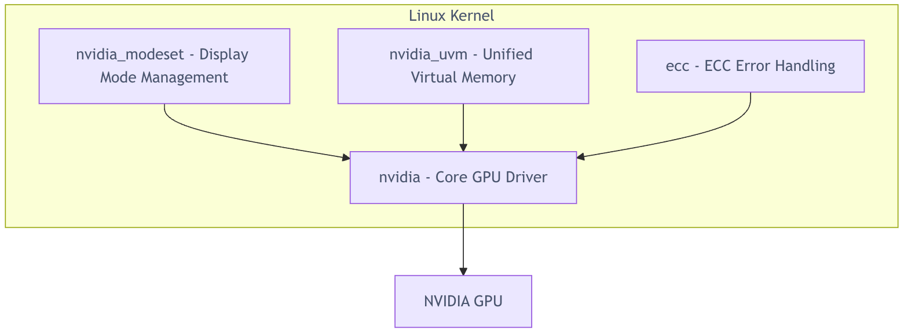
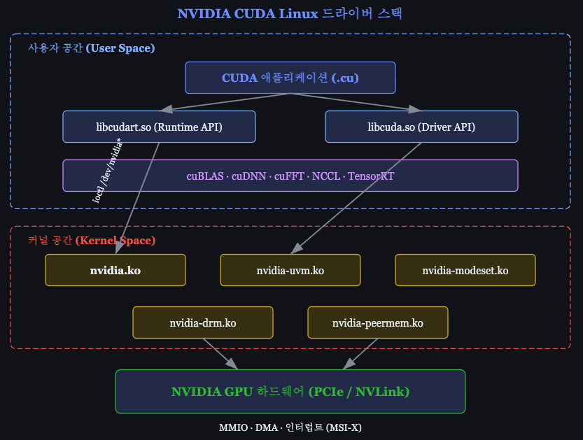
nvidia-smi 조회 시 호출 체인과, 로컬 PC에서 GPU 코드를 실행할 때의 경로(유저 프로세스 → syscall →
커널 → NVIDIA 커널 모듈 → GPU)를 아래 그림으로 확인할 수 있습니다.
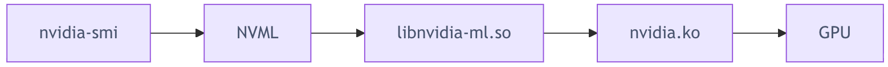
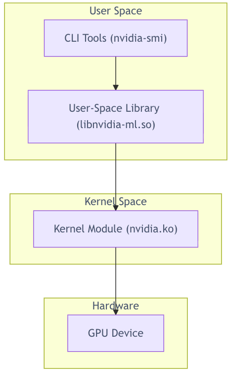
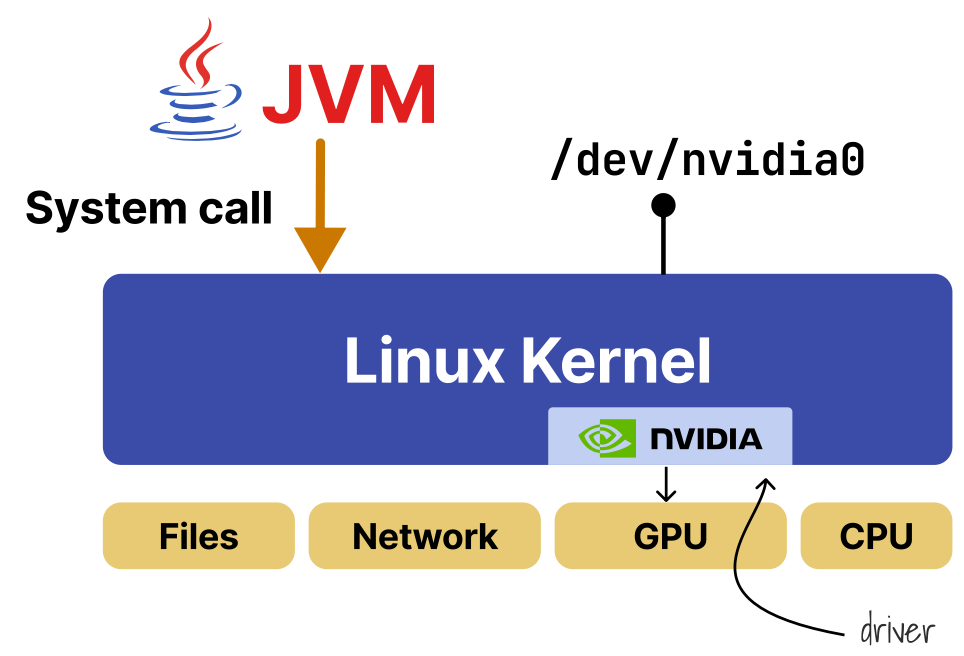
동작 확인: verify_gpu.py로 4096×4096 GPU 행렬곱을 실행하고 nvidia-smi로 GPU 사용률을 실시간 확인합니다.
apt install -y python3-venv python3-pip
python3 -m venv /root/gpu-test-venv
/root/gpu-test-venv/bin/pip install --upgrade pip
/root/gpu-test-venv/bin/pip install torch numpy # ~2GB 다운로드
# verify_gpu.py
import torch, time
assert torch.cuda.is_available(), "CUDA GPU를 찾을 수 없습니다"
device = torch.device("cuda")
print("GPU:", torch.cuda.get_device_name(0))
n = 4096
a = torch.randn(n, n, device=device)
b = torch.randn(n, n, device=device)
torch.cuda.synchronize()
start = time.time()
while time.time() - start < 5:
c = a @ b
torch.cuda.synchronize()
elapsed = time.time() - start
print(f"GPU 행렬곱 {n}x{n} 반복 실행: {elapsed:.1f}초")
print("결과 checksum:", c.sum().item())
print("GPU 메모리 사용량(MB):", torch.cuda.memory_allocated() / 1024**2)
# 다른 터미널에서 모니터링
watch -n 0.5 nvidia-smi
# 실행
/root/gpu-test-venv/bin/python /root/verify_gpu.py
# GPU 행렬곱 4096x4096 반복 실행: 9.9초 (관측값, 환경마다 다를 수 있음)
3. Docker 설치 → NVIDIA Container Toolkit 설치 및 확인
# Docker 설치
apt install -y ca-certificates curl
install -m 0755 -d /etc/apt/keyrings
curl -fsSL https://download.docker.com/linux/ubuntu/gpg -o /etc/apt/keyrings/docker.asc
chmod a+r /etc/apt/keyrings/docker.asc
echo "deb [arch=amd64 signed-by=/etc/apt/keyrings/docker.asc] https://download.docker.com/linux/ubuntu noble stable" > /etc/apt/sources.list.d/docker.list
apt update
apt install -y docker-ce docker-ce-cli containerd.io docker-buildx-plugin docker-compose-plugin
docker run --rm hello-world
# NVIDIA Container Toolkit 설치
curl -fsSL https://nvidia.github.io/libnvidia-container/gpgkey | \
gpg --dearmor -o /usr/share/keyrings/nvidia-container-toolkit-keyring.gpg
curl -s -L https://nvidia.github.io/libnvidia-container/stable/deb/nvidia-container-toolkit.list | \
sed 's#deb https://#deb [signed-by=/usr/share/keyrings/nvidia-container-toolkit-keyring.gpg] https://#g' | \
tee /etc/apt/sources.list.d/nvidia-container-toolkit.list
apt update
apt install -y nvidia-container-toolkit
# Docker 엔진에 nvidia 런타임 등록
nvidia-ctk runtime configure --runtime=docker
systemctl restart docker
cat /etc/docker/daemon.json
# {"runtimes": {"nvidia": {"args": [], "path": "nvidia-container-runtime"}}}
# 검증
docker run --rm --gpus all ubuntu nvidia-smi
📚 참고 자료: NVIDIA Container Toolkit 공식 문서[4] 확인 결과,nvidia-ctk runtime configure --runtime=docker→systemctl restart docker절차가 원문과 정확히 일치합니다. 문서는 Docker/Containerd/CRI-O는 legacy 모드 기준으로 설명하고, Podman에서는 CDI 사용을 권장합니다 — 실제 어느 모드가 활성화되는지는 toolkit/runtime 버전에 따라 달라지므로,nvidia-ctk cdi list나 컨테이너 내부 디바이스 마운트 결과로 직접 확인하는 것이 안전합니다.
/etc/nvidia-container-runtime/config.toml을 보면 mode = "auto"로 cdi/csv/legacy 3가지 방식
중 자동 감지합니다.
- CDI(Container Device Interface):
/etc/cdi,/var/run/cdi의 스펙 파일로 GPU를 주입하는 표준 방식(K8s에서cdi.k8s.io/어노테이션 사용) - CSV: 주로 Jetson/임베디드 환경에서 파일 목록 마운트
- legacy: 전통적인
nvidia-container-cli기반 방식
컨테이너는 원래 호스트의 GPU 디바이스 파일이나 드라이버 라이브러리를 볼 수 없는 격리된 공간입니다. NVIDIA Container Toolkit은 컨테이너가 시작되기 직전(prestart hook 시점)에 끼어들어 4가지 임시 출입증을 발급합니다: ①GPU 디바이스 파일 bind-mount ②호스트 드라이버 라이브러리 복사 ③환경변수 주입(어떤 GPU를 몇 개 노출할지) ④cgroup 권한 설정.
docker run --gpus all ubuntu nvidia-smi가 CUDA 이미지가 아닌 순정 ubuntu에서도 동작하는 이유입니다.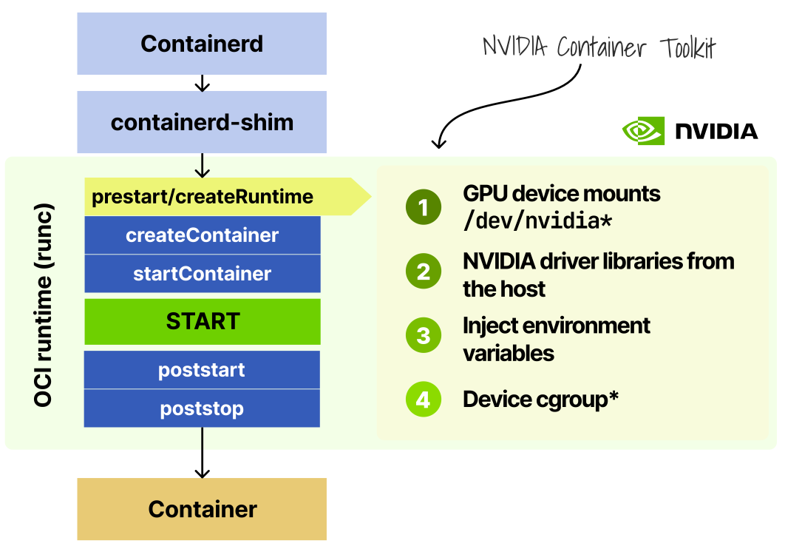
# 동작 확인
docker run --rm -it --gpus all ubuntu bash
nvidia-smi # toolkit이 호스트 것을 밀어줌
which nvidia-smi # /usr/bin/nvidia-smi
ls -l /dev/nvidia* # 컨테이너 내부에서도 디바이스 파일 보임
env | grep -i nvidia # NVIDIA_VISIBLE_DEVICES=void (중복 주입 방지)
exit
4. Docker 삭제 → K3s 설치 → NVIDIA device plugin for Kubernetes 설치 및 확인
이 실습은 Docker를 지우고 K3s(경량 Kubernetes[5])로 전환합니다.
⚠ 주의 — 되돌릴 수 없는 작업: 아래 명령은 Docker의 이미지·컨테이너·네트워크 설정을 전부 삭제합니다. 다른 용도로 쓰는 PC라면 먼저 백업하세요.
# Docker 완전 삭제
docker ps -a; docker images
systemctl disable --now docker.service docker.socket containerd.service
apt purge -y docker-ce docker-ce-cli docker-buildx-plugin docker-ce-rootless-extras docker-compose-plugin containerd.io
apt autoremove -y --purge
rm -rf /var/lib/docker /var/lib/containerd /etc/docker /etc/containerd
rm -f /etc/apt/sources.list.d/docker.list /etc/apt/keyrings/docker.asc
groupdel docker
apt update
for cmd in iptables ip6tables; do
for table in filter nat mangle raw; do $cmd -t $table -F; $cmd -t $table -X; done
$cmd -P INPUT ACCEPT; $cmd -P FORWARD ACCEPT; $cmd -P OUTPUT ACCEPT
done
ip link delete docker0
# K3s 설치
curl -sfL https://get.k3s.io | INSTALL_K3S_EXEC="server \
--kube-controller-manager-arg=bind-address=0.0.0.0 \
--kube-scheduler-arg=bind-address=0.0.0.0 \
--kube-proxy-arg=metrics-bind-address=0.0.0.0 \
--write-kubeconfig-mode=644" sh -
systemctl is-active k3s.service
# 확인
kubectl cluster-info -v=6
ln -s /etc/rancher/k3s/k3s.yaml ~/.kube/config
kubectl get node -owide
# K3s가 nvidia/nvidia-cdi/nvidia-experimental 등 런타임을 자동 감지해 RuntimeClass로 등록할 수 있음
grep nvidia /var/lib/rancher/k3s/agent/etc/containerd/config.toml
kubectl get runtimeclass nvidia
⚠ 단정하지 말고 확인할 것: K3s가nvidiaRuntimeClass를 항상 자동 등록하는 것은 아닙니다 — 설치 순서, PATH, K3s/containerd 버전에 따라 결과가 다를 수 있습니다. 반드시kubectl get runtimeclass로 실제 존재 여부를 확인하고, 없다면 K3s가nvidia-container-runtime바이너리를 인식했는지(which nvidia-container-runtime, containerd config)부터 점검하세요.
K8s가 GPU를 인식하게 하는 원리 — Device Plugin
Kubernetes는 CPU/메모리는 리눅스 cgroup으로 태생적으로 이해하지만 GPU는 전혀 모릅니다. 그래서 "GPU를 이해하는 통역사" 역할의 Device Plugin이 필요합니다.
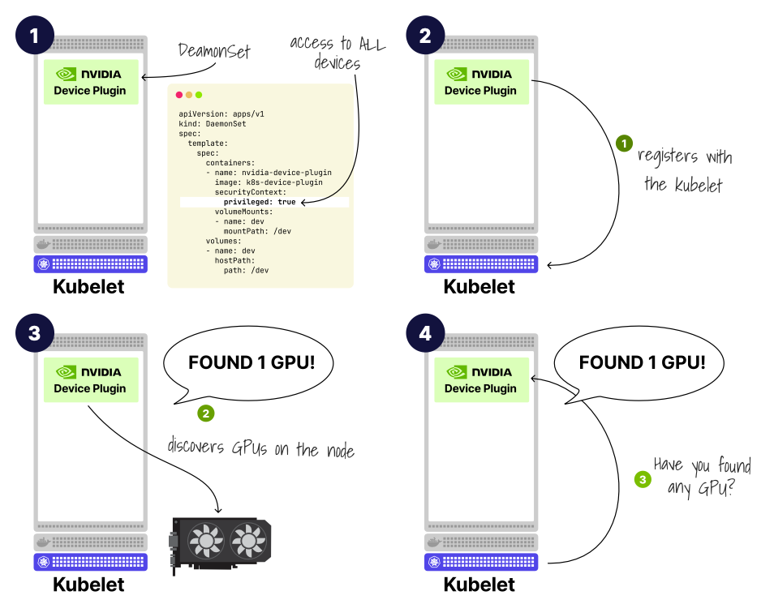
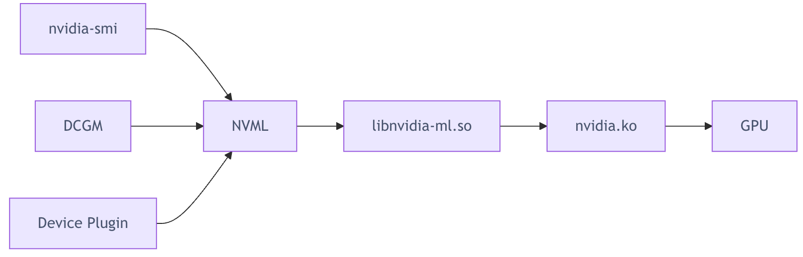
- DaemonSet으로 배포: 모든 GPU 노드에 하나씩 뜨는 DaemonSet
- kubelet에 등록: "나는 GPU 담당 플러그인이야"라고 자기소개
- GPU 탐색: NVML 라이브러리(
libnvidia-ml.so)를 호출해 GPU 개수를 스스로 찾음 - kubelet이 물어봄 → 보고:
ListAndWatchgRPC 스트림으로 지속적으로 "1개 있어!"라고 알림 (heartbeat처럼 유지되는 이유: GPU가 고장 나거나 빠지면 즉시 스케줄링에서 제외해야 하므로)
NVIDIA 공식 device plugin 저장소[6]의 정적 매니페스트를 사용합니다.
# Device Plugin 설치 (매니페스트 방식)
curl -sL https://raw.githubusercontent.com/NVIDIA/k8s-device-plugin/v0.20.0/deployments/static/nvidia-device-plugin.yml -o /root/nvidia-device-plugin.yml
sed -i "30a\\ runtimeClassName: nvidia" /root/nvidia-device-plugin.yml # k3s가 등록해둔 RuntimeClass 사용
kubectl apply -f /root/nvidia-device-plugin.yml
kubectl get ds -n kube-system nvidia-device-plugin-daemonset
kubectl get nodes -o jsonpath='{.items[*].status.allocatable.nvidia\.com/gpu}'; echo
# 1
# (참고) Helm 설치 방법
helm repo add nvdp https://nvidia.github.io/k8s-device-plugin
helm install nvidia-device-plugin nvdp/nvidia-device-plugin \
--namespace kube-system --create-namespace --set runtimeClassName=nvidia
📌 실전 팁: 위sed -i "30a..."처럼 다운로드한 매니페스트의 특정 줄 번호에 패치를 삽입하는 방식은 upstream YAML이 바뀌면 깨질 수 있습니다. 가능하면kustomizepatch나 Helm(--set runtimeClassName=nvidia)처럼 줄 번호에 의존하지 않는 방식을 쓰는 것이 더 안전합니다.
과거 방식은 device plugin 파드에
privileged: true와 /dev 전체 hostPath를 줘서 무엇이든 볼 수 있게 했습니다. 최신 v0.20.0은 그렇게 하지 않고, 파드 스펙에 runtimeClassName: "nvidia"만 지정합니다. 이 값 덕분에 containerd가 이 파드도 "GPU를 쓰는 평범한 파드"로 취급해서 OCI prestart 훅이 자동으로 필요한 접근권(NVML 조회 + kubelet 보고)만 주입합니다. 커널 capability는 전부 버리고, 호스트 /dev 전체 접근도 주지 않습니다.5. 파드 기동 및 확인

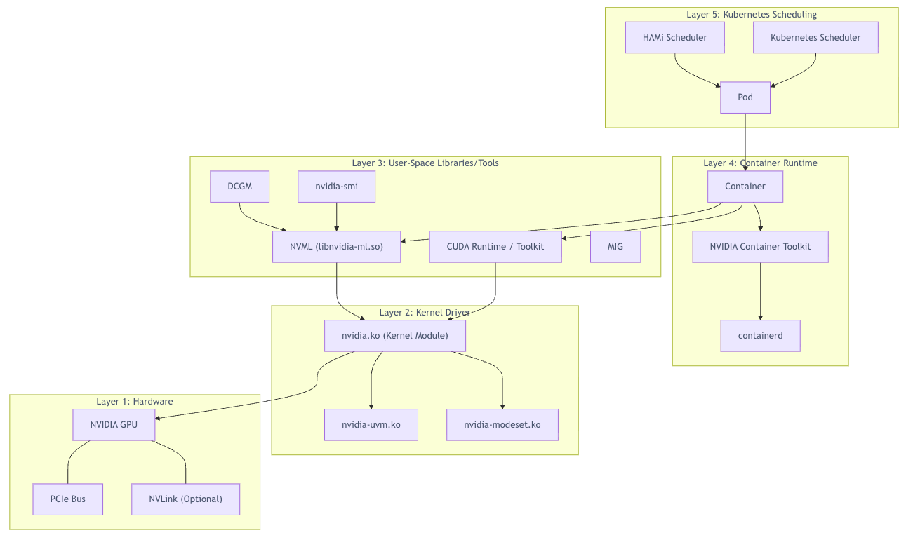
흐름: ① kubelet이 Device Plugin에 지속적으로 폴링(ListAndWatch) → ② GPU 필요한 파드가 오면
kubelet이 Allocate API 호출 → ③ kubelet이 CRI(컨테이너 생성)에 GPU 마운트 정보 전달 → ④ containerd
→ containerd-shim → runc가 컨테이너를 만드는 파이프라인 중 prestart 훅에서 NVIDIA Container
Toolkit이 디바이스/라이브러리/환경변수/cgroup 4가지를 주입.
📖 Device Plugin은 "어떤 GPU를 줄지 결정"만 하고, 실제 /dev 마운트 같은 물리적 작업은 컨테이너 런타임(toolkit)이 담당합니다.
cat << EOF | kubectl apply -f -
apiVersion: v1
kind: Pod
metadata:
name: gpu-test
namespace: default
spec:
runtimeClassName: nvidia
restartPolicy: Never
containers:
- name: gpu-test
image: ubuntu:24.04
command: ["sleep", "infinity"]
resources:
limits:
nvidia.com/gpu: 1
EOF
kubectl exec -it gpu-test -- bash
# 컨테이너 안:
env | grep NVIDIA # NVIDIA_VISIBLE_DEVICES=GPU-...
nvidia-smi # toolkit이 호스트 것을 밀어줌
apt update && apt install -y python3-venv python3-pip
python3 -m venv /root/venv && /root/venv/bin/pip install torch numpy
/root/venv/bin/python -c "import torch; print(torch.cuda.is_available(), torch.cuda.get_device_name(0))"
exit
kubectl delete pod gpu-test
(참고)
python/pytorch가 이미 설치된 컨테이너 이미지(pytorch/pytorch:2.9.0-cuda12.8-cudnn9-runtime, 약 4.5GB)를 대신 써도 됩니다.
CDI(Container Device Interface) 훅 정보 확인
# K3s는 이 경로, 일반 K8s는 /etc/containerd/config.toml
cat /etc/nvidia-container-runtime/config.toml | grep -i cdi
cat /var/run/cdi/nvidia.yaml
# cdiVersion: 0.7.0, kind: nvidia.com/gpu
# devices: [{name: "0", containerEdits: {deviceNodes: [...], hooks: [...]}}]

6. kube-prometheus-stack 설치 → DCGM Exporter 설치 및 확인
커뮤니티 유지보수 Helm 차트[7]로 Prometheus/Grafana/Alertmanager를 한 번에 설치합니다.
helm repo add prometheus-community https://prometheus-community.github.io/helm-charts
helm repo update
kubectl get sc # K3s 기본: local-path (rancher.io/local-path)
MYPCIP=<YOUR_PC_IP> # 예시가 아니라 반드시 본인 PC의 로컬 IP로 교체 (ip addr 또는 hostname -I로 확인)
cat <<EOT > monitor-values.yaml
prometheus:
service:
type: NodePort
nodePort: 30001
prometheusSpec:
serviceMonitorSelectorNilUsesHelmValues: false
retention: 7d
storageSpec:
volumeClaimTemplate:
spec:
storageClassName: local-path
accessModes: [ReadWriteOnce]
resources:
requests: {storage: 20Gi}
grafana:
defaultDashboardsTimezone: Asia/Seoul
adminPassword: <YOUR_GRAFANA_ADMIN_PASSWORD>
service:
type: NodePort
nodePort: 30002
persistence:
enabled: true
type: pvc
storageClassName: local-path
accessModes: [ReadWriteOnce]
size: 10Gi
alertmanager:
alertmanagerSpec:
storage:
volumeClaimTemplate:
spec:
storageClassName: local-path
accessModes: [ReadWriteOnce]
resources:
requests: {storage: 5Gi}
prometheus-windows-exporter:
prometheus:
monitor: {enabled: false}
kubeControllerManager:
enabled: true
endpoints: [$MYPCIP]
service: {enabled: true, port: 10257, targetPort: 10257}
serviceMonitor: {enabled: true, https: true, insecureSkipVerify: true}
kubeScheduler:
enabled: true
endpoints: [$MYPCIP]
service: {enabled: true, port: 10259, targetPort: 10259}
serviceMonitor: {enabled: true, https: true, insecureSkipVerify: true}
kubeProxy:
enabled: true
endpoints: [$MYPCIP]
service: {enabled: true, port: 10249, targetPort: 10249}
serviceMonitor: {enabled: true}
kubeEtcd:
enabled: false # K3s 단일 노드는 sqlite라서 etcd 없음 (--cluster-init 구성일 때만 true)
EOT
helm upgrade --install kube-prometheus-stack prometheus-community/kube-prometheus-stack --version 87.5.1 \
-f monitor-values.yaml --create-namespace --namespace monitoring
open http://$MYPCIP:30001 # prometheus
open http://$MYPCIP:30002 # grafana : admin / <YOUR_GRAFANA_ADMIN_PASSWORD>
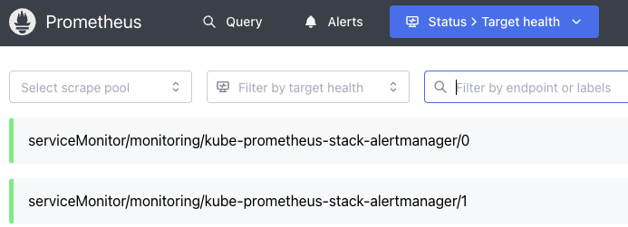
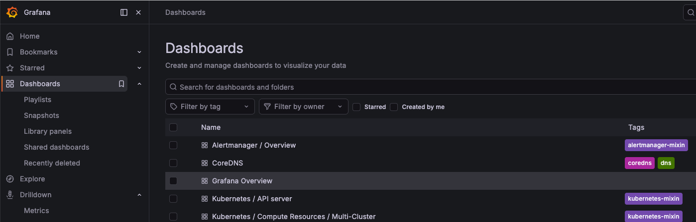
DCGM Exporter 설치[8]
helm repo add nvidia https://nvidia.github.io/dcgm-exporter/helm-charts
helm repo update
helm upgrade --install dcgm-exporter nvidia/dcgm-exporter \
-n monitoring \
--set runtimeClassName=nvidia \
--set serviceMonitor.enabled=true
kubectl -n monitoring port-forward svc/dcgm-exporter 9400:9400
curl -s http://localhost:9400/metrics | grep DCGM_FI_DEV_GPU_UTIL
| 메트릭 | 의미 |
|---|---|
DCGM_FI_DEV_GPU_UTIL |
GPU Core 사용률 |
DCGM_FI_DEV_MEM_COPY_UTIL |
GPU Memory Controller 사용률 |
DCGM_FI_DEV_FB_USED / FB_FREE |
VRAM 사용량 / 여유 |
DCGM_FI_DEV_GPU_TEMP |
GPU 온도 |
DCGM_FI_DEV_POWER_USAGE |
GPU 전력 사용량 |
DCGM_FI_DEV_SM_CLOCK / MEM_CLOCK |
SM/메모리 클럭 |
DCGM_FI_DEV_PCIE_TX/RX_THROUGHPUT |
PCIe 대역폭 |
DCGM_FI_DEV_XID_ERRORS |
NVIDIA XID 에러 |
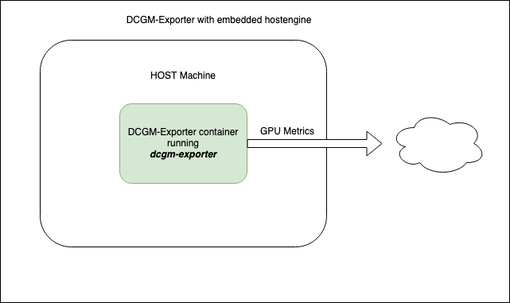
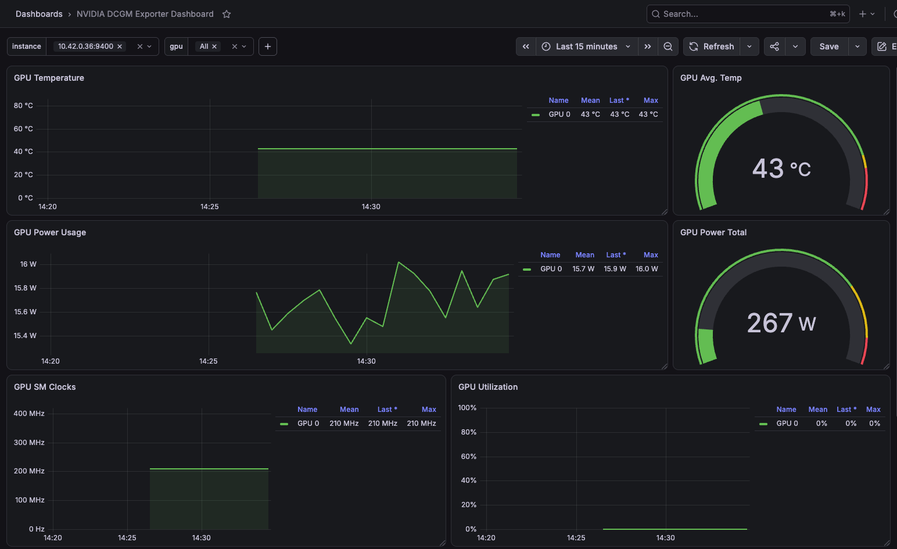
📌 (참고) GeForce 카드에서는 DCGM_FI_PROF_* 계열 메트릭이 드라이버 레벨 제품 세분화 제한으로 켤 수 없습니다.
GPU 부하 발생 후 메트릭 확인 (N-body 시뮬레이션, 약 4분 소요)
cat <<'EOF' | kubectl apply -f -
apiVersion: v1
kind: Pod
metadata:
name: gpu-load
spec:
restartPolicy: Never
runtimeClassName: nvidia
containers:
- name: cuda
image: nvcr.io/nvidia/k8s/cuda-sample:nbody
args: ["nbody", "-gpu", "-benchmark", "-numbodies=5000000"]
resources:
limits:
nvidia.com/gpu: 1
EOF
kubectl logs gpu-load -f
원문 실측 결과 예시(특정 GPU·클럭 상태의 참고값이며 표준 벤치마크 수치가 아닙니다): 5,000,192개 body(256의 배수로 자동 반올림)를 10회 반복, 총 211.78초, 약 1.18조 interactions/s, 약 23,611 GFLOP/s(FP32). RTX 4070 Ti SUPER는 Ada Lovelace(Compute Capability 8.9)지만 이 CUDA 샘플이 SM 8.9 매핑 테이블을 갖고 있지 않아 기본값(128 Cores/SM, "Ampere"로 표시)을 씁니다 — GPU가 실제로 Ampere라는 뜻이 아니라 샘플 코드의 폴백 표시입니다. 이 수치들은 본인 GPU 모델에 그대로 일반화하지 마세요.
📌 CUDA 샘플은 공식 벤치마크 도구가 아닙니다 — 출력된 GFLOP/s는 참고용입니다.
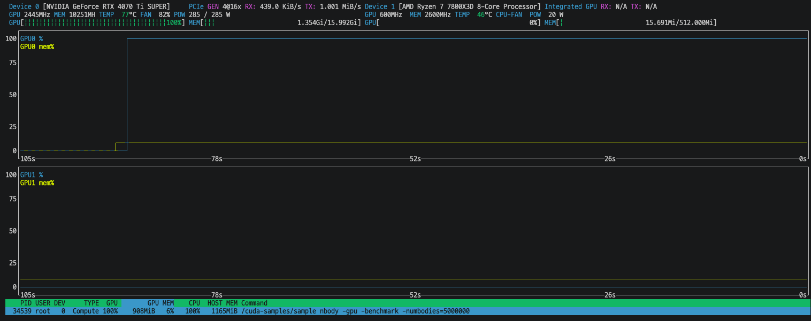
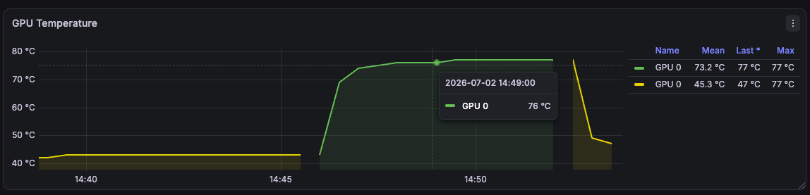
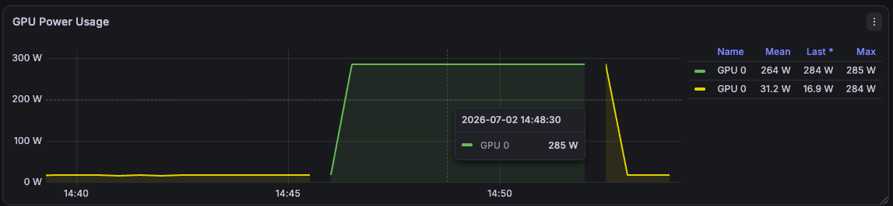
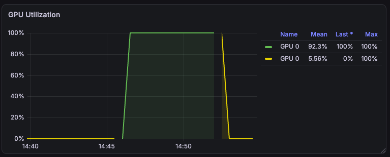
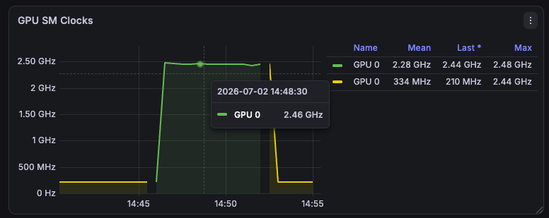
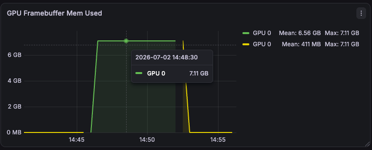
Prometheus Alert Rule 예시 (고온/XID 에러/메모리 과다 사용)
cat <<'EOF' | kubectl apply -f -
apiVersion: monitoring.coreos.com/v1
kind: PrometheusRule
metadata:
name: gpu-alert-rules
namespace: monitoring
labels:
release: kube-prometheus-stack
spec:
groups:
- name: gpu.rules
rules:
- alert: HighGpuTemperature
expr: DCGM_FI_DEV_GPU_TEMP > 85
for: 5m
labels: {severity: warning}
annotations:
summary: "GPU temperature is high"
- alert: GpuXidError
expr: DCGM_FI_DEV_XID_ERRORS > 0
for: 1m
labels: {severity: critical}
annotations:
summary: "GPU XID error detected"
- alert: HighGpuMemoryUsage
expr: DCGM_FI_DEV_FB_USED / (DCGM_FI_DEV_FB_USED + DCGM_FI_DEV_FB_FREE) * 100 > 90
for: 10m
labels: {severity: warning}
annotations:
summary: "GPU memory usage is high"
EOF
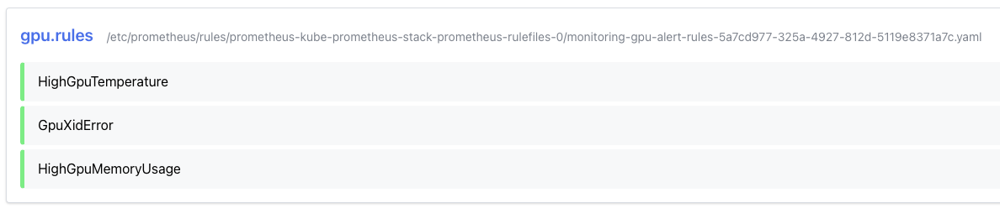
📖 (참고) Utilyze(GitHub[9])는 GPU 하드웨어 성능 카운터를 직접 샘플링해 실제 컴퓨팅 사용률(nvtop의 단순 읽기/쓰기율과 달리 행렬 크기별로 달라지는 실제 처리량)을 보여주는 참고 도구로 소개되었습니다.
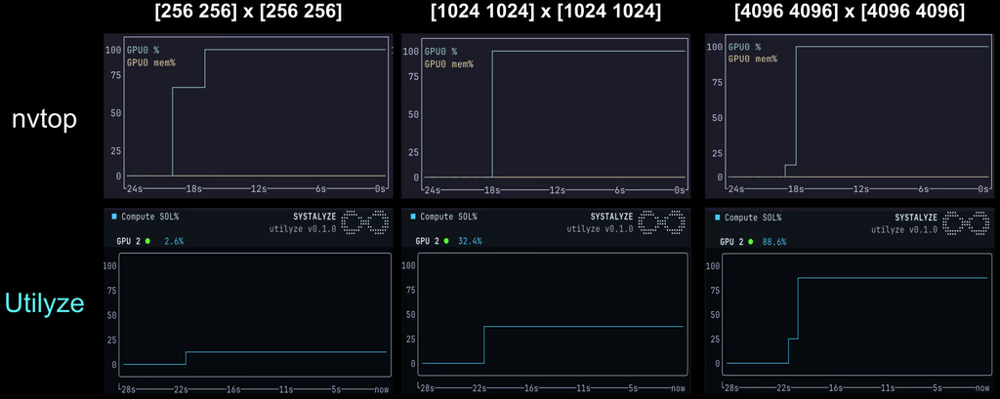
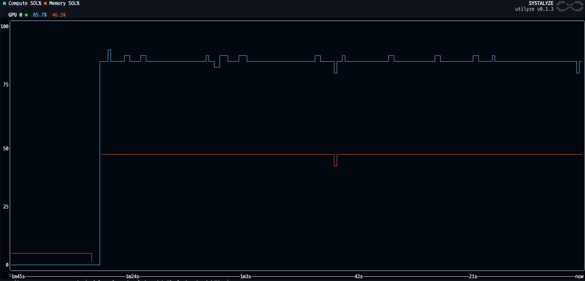
7. NVIDIA GPU Operator
소개: K8s에서 GPU 관련 소프트웨어 스택(드라이버, Device Plugin, Container Toolkit, Feature Discovery, DCGM 모니터링)을 자동으로 프로비저닝/관리하는 오퍼레이터입니다. 여러 노드로 구성된 클러스터에서 노드마다 수동 설정 없이 일관되게 GPU 스택을 배포하고 싶을 때 사용합니다.
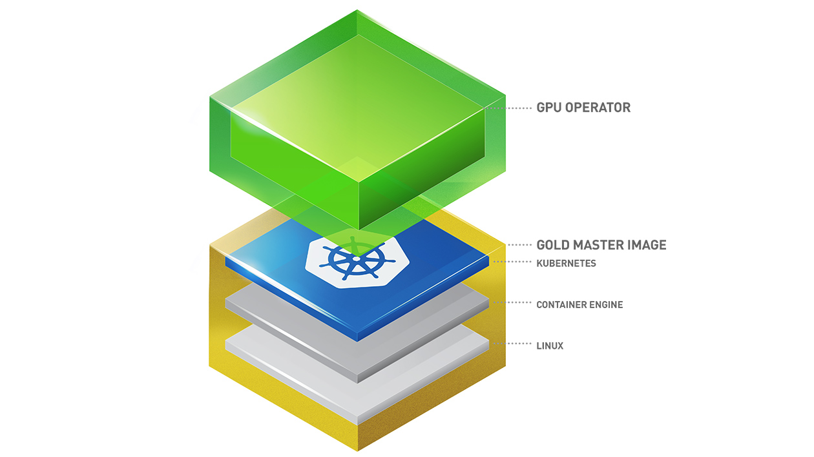
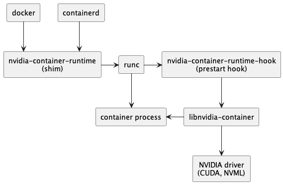
이 실습은 호스트에 이미 드라이버/툴킷이 있으므로 무거운 GPU Operator 대신, NFD + GFD를 통해 "노드 라벨링"만 실습합니다.
NFD (Node Feature Discovery)[10]: 노드의 CPU/커널/PCI/GPU 등 하드웨어 특성을 자동 감지해 Node Label로 붙입니다.
helm install -n node-feature-discovery --create-namespace nfd \
oci://registry.k8s.io/nfd/charts/node-feature-discovery --version 0.18.3
kubectl get pods -n node-feature-discovery
kubectl get node -o json | jq '.items[].metadata.labels | with_entries(select(.key | startswith("feature.node.kubernetes.io/")))'
GFD (GPU Feature Discovery): NFD 위에서 NVIDIA GPU 세부 라벨을 붙입니다 (예전 독립 저장소는
archived되었고 NVIDIA/k8s-device-plugin으로 통합됨).
helm upgrade --install nvidia-device-plugin nvdp/nvidia-device-plugin -n kube-system \
--set runtimeClassName=nvidia --set gfd.enabled=true
kubectl get node -o json | jq '.items[].metadata.labels | with_entries(select(.key | startswith("nvidia.com/")))'
# nvidia.com/gpu.product: <GPU 모델명>
# nvidia.com/gpu.memory: <VRAM MiB>
# nvidia.com/gpu.family: <아키텍처 코드네임>
# nvidia.com/gpu.compute.major/minor: <Compute Capability>
# nvidia.com/mig.capable: true/false
이렇게 라벨링된 정보로 특정 GPU 노드에만 파드를 스케줄링하는 등 활용이 가능합니다.
# 실습 후 정리 (기본 Device Plugin 복구 필요)
helm uninstall -n kube-system nvidia-device-plugin
helm uninstall -n node-feature-discovery nfd
kubectl delete namespace node-feature-discovery
kubectl apply -f /root/nvidia-device-plugin.yml
8. vLLM 배포 및 사용
이번 실습은 MinIO[11](S3 호환 오브젝트 스토리지)에 모델을 올리고, vLLM[12]이 runai_streamer로 S3에서
직접 스트리밍 로드하는 구조입니다.
📋 시작 전 확인 사항: 아래를 미리 확인하면 중간에 막히지 않습니다.
- 모델 접근 권한: Hugging Face에서 skt/A.X-4.0-Light[13] 페이지에 접속해 라이선스 동의(gated 모델인 경우)가 되어 있는지 먼저 확인하세요. 안 되어 있으면 Job이 다운로드 단계에서 실패합니다.
- GPU VRAM 여유: 실습 PC의 GPU 메모리가 모델 크기보다 충분히 큰지
nvidia-smi로 확인하세요. 부족하면 vLLM 컨테이너가 OOM으로 죽습니다.- 이미지 태그 호환성:
vllm/vllm-openai:v0.28.0은 이 실습 시점 기준값입니다. 실제 사용 가능 여부와 설치된 드라이버/CUDA 버전과의 호환성을 Docker Hub 태그 목록[14]에서 확인하세요.- NodePort 접근성: MinIO 콘솔(30003)/vLLM API(30005)/Open WebUI(30006) 포트가 실습 PC의 방화벽·LAN 설정에서 실제로 열려 있는지 확인하세요.
| 리소스 | 내용 |
|---|---|
| Namespace | vllm |
Secret hf-token |
최초 1회 모델 다운로드에만 사용 |
Secret minio-credentials |
MinIO 계정 (반드시 직접 랜덤 생성) |
Deployment+PVC minio |
replicas=1, PVC 30Gi(local-path), NodePort 30003(콘솔) |
Job model-loader (1회성) |
HF에서 skt/A.X-4.0-Light 다운로드 → MinIO에 업로드 |
Deployment vllm-server |
vllm/vllm-openai:v0.28.0, runtimeClassName: nvidia, NodePort 30005 |
⚠ 본인 환경에 맞게 반드시 교체 필요: MinIO root 비밀번호는 절대 예시 문자열을 그대로 쓰지 마세요.openssl rand -base64 24등으로 직접 생성한 값을<YOUR_MINIO_PASSWORD>자리에 넣으세요. PC IP($MYPCIP)도 실습마다 다릅니다.
kubectl create namespace vllm
kubectl create secret generic minio-credentials -n vllm \
--from-literal=MINIO_ROOT_USER=<YOUR_MINIO_USER> \
--from-literal=MINIO_ROOT_PASSWORD=<YOUR_MINIO_PASSWORD>
kubectl create secret generic hf-token -n vllm \
--from-literal=HF_TOKEN=<YOUR_HF_TOKEN>
apiVersion: v1
kind: PersistentVolumeClaim
metadata: {name: minio-data, namespace: vllm}
spec:
accessModes: ["ReadWriteOnce"]
storageClassName: local-path
resources: {requests: {storage: 30Gi}}
---
apiVersion: apps/v1
kind: Deployment
metadata: {name: minio, namespace: vllm}
spec:
replicas: 1
selector: {matchLabels: {app: minio}}
template:
metadata: {labels: {app: minio}}
spec:
containers:
- name: minio
image: minio/minio:latest
args: ["server", "/data", "--console-address", ":9001"]
envFrom: [{secretRef: {name: minio-credentials}}]
ports: [{containerPort: 9000, name: api}, {containerPort: 9001, name: console}]
volumeMounts: [{name: data, mountPath: /data}]
volumes: [{name: data, persistentVolumeClaim: {claimName: minio-data}}]
---
apiVersion: v1
kind: Service
metadata: {name: minio, namespace: vllm}
spec:
selector: {app: minio}
ports: [{name: api, port: 9000, targetPort: 9000}]
---
apiVersion: v1
kind: Service
metadata: {name: minio-console, namespace: vllm}
spec:
type: NodePort
selector: {app: minio}
ports: [{name: console, port: 9001, targetPort: 9001, nodePort: 30003}]
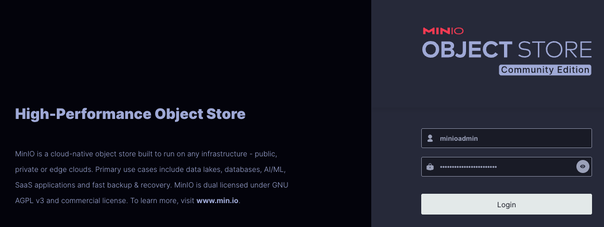
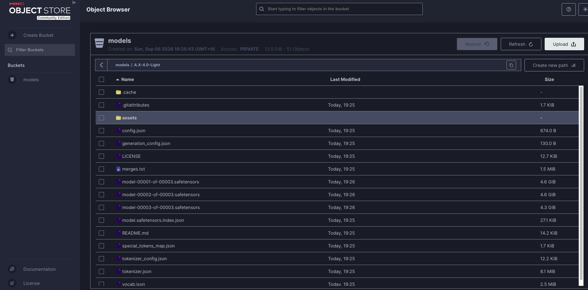
모델 다운로드 Job (HF → MinIO 업로드)
apiVersion: batch/v1
kind: Job
metadata: {name: model-loader, namespace: vllm}
spec:
backoffLimit: 1
template:
spec:
restartPolicy: Never
initContainers:
- name: hf-download
image: python:3.12-slim
command: ["sh", "-c", "pip install --no-cache-dir -U \"huggingface_hub[cli]\" && hf download skt/A.X-4.0-Light --local-dir /model --token \"$HF_TOKEN\""]
env: [{name: HF_TOKEN, valueFrom: {secretKeyRef: {name: hf-token, key: HF_TOKEN}}}]
volumeMounts: [{name: model, mountPath: /model}]
containers:
- name: s3-upload
image: minio/mc:latest
command: ["sh", "-c", "mc alias set localminio http://minio.vllm.svc.cluster.local:9000 \"$MINIO_ROOT_USER\" \"$MINIO_ROOT_PASSWORD\" && mc mb --ignore-existing localminio/models && mc mirror --overwrite /model localminio/models/A.X-4.0-Light"]
envFrom: [{secretRef: {name: minio-credentials}}]
volumeMounts: [{name: model, mountPath: /model}]
volumes: [{name: model, emptyDir: {sizeLimit: 20Gi}}]
vLLM Deployment (S3 스트리밍 로더 사용)
apiVersion: apps/v1
kind: Deployment
metadata: {name: vllm-server, namespace: vllm}
spec:
replicas: 1
strategy: {type: Recreate}
selector: {matchLabels: {app: vllm-server}}
template:
metadata: {labels: {app: vllm-server}}
spec:
runtimeClassName: nvidia
containers:
- name: vllm
image: vllm/vllm-openai:v0.28.0
command: ["/bin/sh", "-c"]
args:
- |
set -eu
python3 -c "import runai_model_streamer" 2>/dev/null || pip install --no-cache-dir vllm[runai]
exec vllm serve s3://models/A.X-4.0-Light \
--served-model-name skt/A.X-4.0-Light \
--load-format runai_streamer \
--host 0.0.0.0 --port 8000 \
--max-model-len 8192 \
--enforce-eager \
--enable-auto-tool-choice \
--tool-call-parser hermes
env:
- {name: AWS_ENDPOINT_URL, value: "http://minio.vllm.svc.cluster.local:9000"}
- {name: AWS_EC2_METADATA_DISABLED, value: "true"}
- {name: RUNAI_STREAMER_S3_USE_VIRTUAL_ADDRESSING, value: "0"}
- {name: AWS_ACCESS_KEY_ID, valueFrom: {secretKeyRef: {name: minio-credentials, key: MINIO_ROOT_USER}}}
- {name: AWS_SECRET_ACCESS_KEY, valueFrom: {secretKeyRef: {name: minio-credentials, key: MINIO_ROOT_PASSWORD}}}
ports: [{containerPort: 8000}]
resources: {limits: {nvidia.com/gpu: 1}}
volumeMounts: [{name: shm, mountPath: /dev/shm}]
volumes: [{name: shm, emptyDir: {medium: Memory, sizeLimit: 1Gi}}]
---
apiVersion: v1
kind: Service
metadata: {name: vllm-server, namespace: vllm}
spec:
type: NodePort
selector: {app: vllm-server}
ports: [{port: 8000, targetPort: 8000, nodePort: 30005}]
전통적인 방식은 모델 파일을 로컬 디스크에 통째로 내려받은 뒤 읽습니다. S3 스트리밍 로더(
runai_streamer)는 창고(MinIO/S3)에서 필요한 부분을 바로 읽어 GPU 메모리로 흘려보내, 큰 모델도 로컬 디스크 여유 공간 걱정 없이 빠르게 기동할 수 있게 해줍니다.참고 — AWS Kr Blog의 스트리밍 로더 최적화 팁 (Gemma 4 서빙 사례)
// 권고 1: FUSE 마운트 대신 s3:// 직접 지정
containers:
- name: vllm
args:
- --model=s3://<model-bucket>/Gemma-4-31B-IT-NVFP4/
- --quantization=modelopt
- --load-format=runai_streamer
- '--model-loader-extra-config={"concurrency":64,"memory_limit":25769803776}'
- --served-model-name=gemma4-31b
- --max-model-len=8192
env:
- {name: AWS_REGION, value: ap-northeast-2} # s3:// 직결의 필수 종속 env
// 권고 2: torch.compile 캐시를 노드에 영속화 (컨테이너 재시작에도 캐시 유지)
containers:
- name: vllm
env:
- {name: VLLM_CACHE_ROOT, value: /vllm-cache}
volumeMounts:
- {name: vllm-cache, mountPath: /vllm-cache}
volumes:
- name: vllm-cache
hostPath: {path: /var/cache/vllm, type: DirectoryOrCreate} # 캐시 수명 = 노드 수명
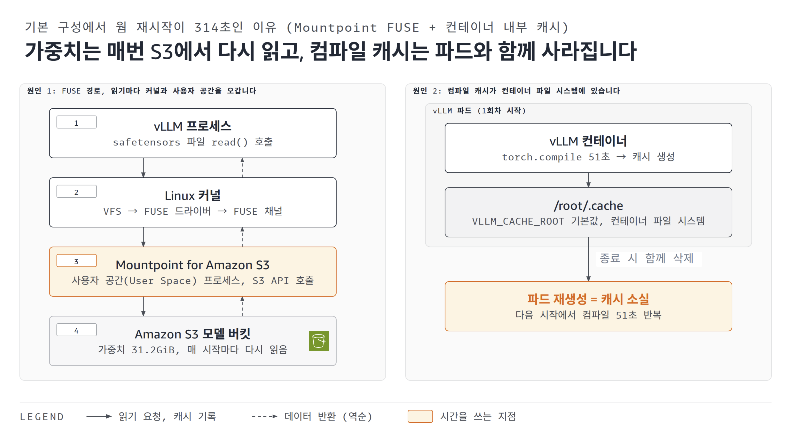
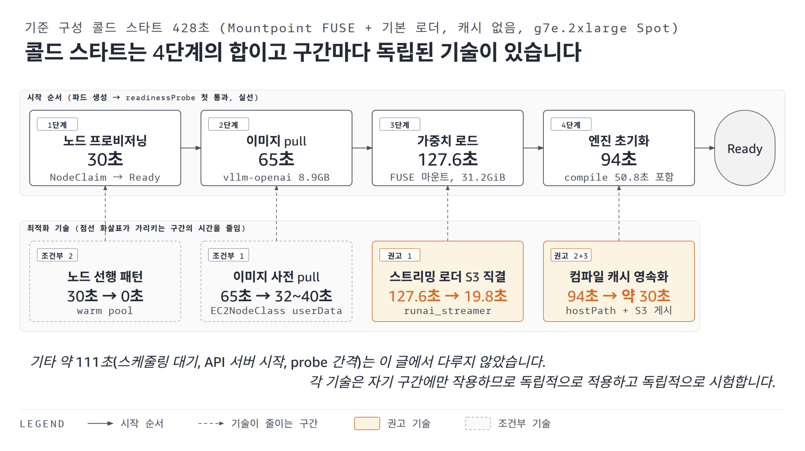
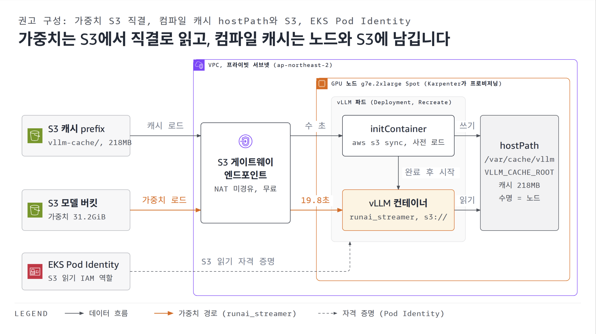
vLLM 추론 호출 확인
curl -s http://<YOUR_PC_IP>:30005/v1/models | python3 -m json.tool
curl -s http://<YOUR_PC_IP>:30005/v1/chat/completions \
-H "Content-Type: application/json" \
-d '{
"model": "skt/A.X-4.0-Light",
"messages": [{"role": "user", "content": "한국의 수도는 어디야?"}],
"max_tokens": 50
}' | jq .choices
# 스트리밍
curl -N http://<YOUR_PC_IP>:30005/v1/chat/completions \
-H "Content-Type: application/json" \
-d '{"model": "skt/A.X-4.0-Light", "messages": [{"role": "user", "content": "한국의 수도는 어디야?"}], "max_tokens": 50, "stream": true}'
Open WebUI 배포[15]
apiVersion: v1
kind: PersistentVolumeClaim
metadata: {name: open-webui-data, namespace: vllm}
spec:
accessModes: ["ReadWriteOnce"]
storageClassName: local-path
resources: {requests: {storage: 2Gi}}
---
apiVersion: apps/v1
kind: Deployment
metadata: {name: open-webui, namespace: vllm}
spec:
replicas: 1
selector: {matchLabels: {app: open-webui}}
template:
metadata: {labels: {app: open-webui}}
spec:
containers:
- name: open-webui
image: ghcr.io/open-webui/open-webui:main
env:
- {name: OPENAI_API_BASE_URL, value: "http://vllm-server.vllm.svc.cluster.local:8000/v1"}
- {name: OPENAI_API_KEY, value: dummy}
- {name: WEBUI_AUTH, value: "false"}
- {name: ENABLE_OLLAMA_API, value: "false"}
ports: [{containerPort: 8080}]
volumeMounts: [{name: data, mountPath: /app/backend/data}]
volumes: [{name: data, persistentVolumeClaim: {claimName: open-webui-data}}]
---
apiVersion: v1
kind: Service
metadata: {name: open-webui, namespace: vllm}
spec:
type: NodePort
selector: {app: open-webui}
ports: [{port: 8080, targetPort: 8080, nodePort: 30006}]
📖 Open WebUI에서 도구 호출(auto tool choice)을 쓰려면 vLLM에--enable-auto-tool-choice와--tool-call-parser hermes가 설정되어 있어야 합니다(위 Deployment에 이미 포함됨).
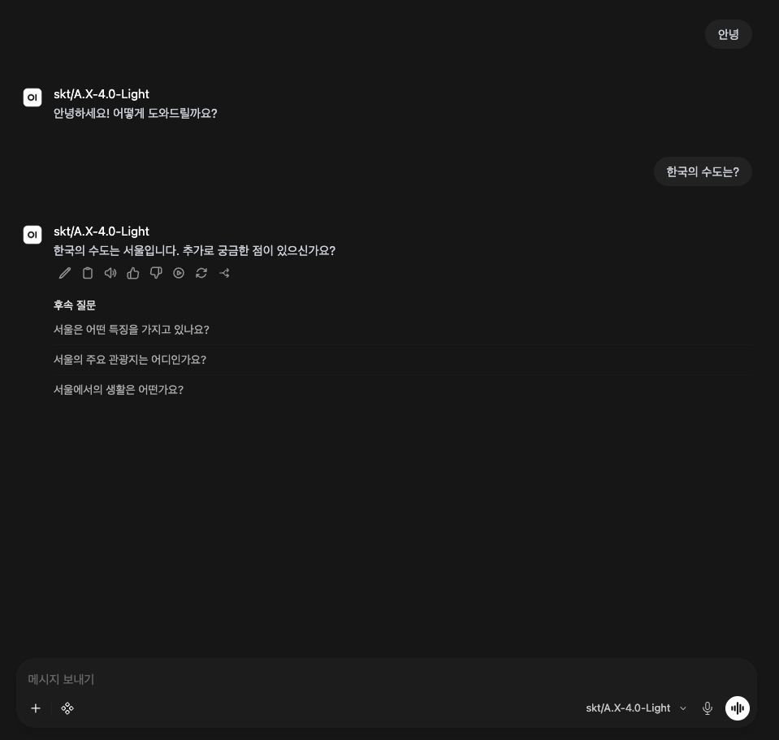
9. HAMi (심화 — 도전과제)
실습을 이어가려면 먼저 kubectl delete ns vllm으로 vLLM/Open WebUI를 정리합니다.
HAMi(구 k8s-vGPU-scheduler)는 하나의 물리 GPU를 여러 컨테이너가 나눠 쓸 수 있게 하는 CNCF Incubating 오픈소스 프로젝트입니다. 컨테이너 내부 코드 수정 없이("Transparent to Workloads") 메모리 한도를 MB 또는 퍼센트 단위로 지정해 여러 워크로드가 GPU를 공유하도록 합니다.
도전과제(원문 그대로): HAMi 설치 후 GPU 1장을 vLLM 2대의 파드로 나눠서 기동하고 서빙 테스트,
HAMi Tutorial[16] 따라해보기.
📚 참고 자료: HAMi 공식 문서[17] 확인 결과, "이기종 AI 컴퓨팅 장치(GPU, NPU 등)를 관리하는 오픈소스 플랫폼"이며 CNCF와 CNAI 랜드스케이프에 모두 등재되어 있다고 소개합니다. 다만 문서에 세대별/칩별 하드웨어 지원 목록이 명시되어 있지 않아, 특정 칩(예: AWS Trainium/Inferentia)의 지원 버전을 단정하지 말고 실습 전 최신 설치 가이드를 직접 확인하는 것을 권장합니다.
10. K8s DRA (심화 — 도전과제)
K8s DRA(Dynamic Resource Allocation)는 기존 Device Plugin보다 유연하게 GPU 등 특수 자원을
클레임 기반으로 할당하는 K8s 메커니즘입니다(알파 기능으로 시작해 버전을 거듭하며 발전 중). 이
실습 페이지는 아래 3개 공식 자료 링크만 제공하고 있어, 실제 실습 절차는 각 링크를 참고해 별도로
진행해야 합니다. ResourceClaim/DeviceClass 기반의 세밀한 장치 요청이 가능해지지만, 이는
Kubernetes 버전과 벤더별 DRA 드라이버 지원 여부에 의존하므로 일반 NVIDIA GPU 공유가 바로 되는
표준 YAML이 있는 것은 아닙니다.
- Kubernetes 공식 문서 — DRA로 디바이스 할당[18]
- Kubernetes v1.37 DRA 업데이트 블로그[19]
- Kubernetes v1.37 워크로드 인식 스케줄링 블로그[20]
사용자 환경별로 반드시 바꿔야 하는 값
| 자리표시자 | 의미 |
|---|---|
<YOUR_PC_IP> ($MYPCIP) |
실습 PC의 로컬 IP (ip addr/hostname -I로 확인) — NodePort 접속에 사용 |
<YOUR_GRAFANA_ADMIN_PASSWORD> |
Grafana admin 비밀번호 — 직접 강한 값으로 설정 |
<YOUR_MINIO_USER> / <YOUR_MINIO_PASSWORD> |
MinIO 계정 — 반드시 직접 랜덤 생성, 원문 예시값 재사용 금지 |
<YOUR_HF_TOKEN> |
Hugging Face 개인 액세스 토큰 |
| GPU 모델명/드라이버 버전 | lspci/ubuntu-drivers devices 조회 결과에 따라 다름 |
참고 자료
- NVIDIA GPU Operator 공식 문서 ↩
- NVIDIA CUDA on WSL User Guide ↩
- NVIDIA Driver Installation Guide ↩
- NVIDIA Container Toolkit 공식 설치 가이드 ↩
- K3s 공식 문서 ↩
- NVIDIA/k8s-device-plugin GitHub ↩
- prometheus-community/helm-charts — kube-prometheus-stack ↩
- NVIDIA/dcgm-exporter GitHub ↩
- Utilyze GitHub ↩
- Node Feature Discovery 공식 문서 ↩
- MinIO 공식 문서 ↩
- vLLM 공식 문서 ↩
- skt/A.X-4.0-Light (Hugging Face) ↩
- Docker Hub — vllm/vllm-openai 태그 목록 ↩
- Open WebUI GitHub ↩
- HAMi Tutorial ↩
- HAMi 공식 문서 ↩
- Kubernetes 공식 문서 — DRA로 디바이스 할당 ↩
- Kubernetes v1.37 DRA 업데이트 블로그 ↩
- Kubernetes v1.37 워크로드 인식 스케줄링 블로그 ↩